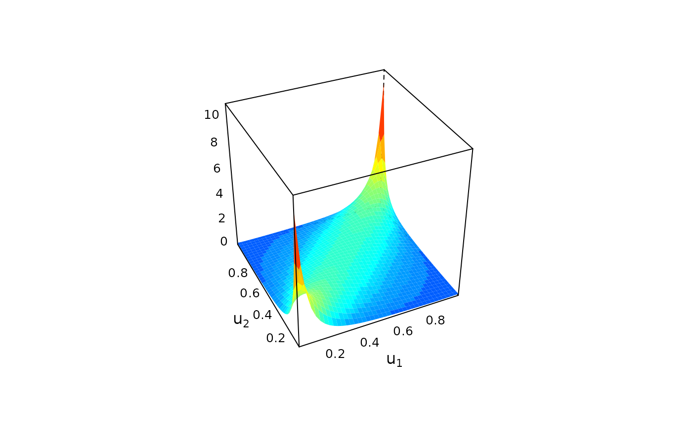

There are several options for plotting bicop_dist objects. The density of a bivariate copula density can be visualized as surface/perspective or contour plot. Optionally, the density can be coupled with standard normal margins (default for contour plots).
Usage
# S3 method for class 'bicop_dist'
plot(x, type = "surface", margins, size, ...)
# S3 method for class 'bicop'
plot(x, type = "surface", margins, size, ...)
# S3 method for class 'bicop_dist'
contour(x, margins = "norm", size = 100L, ...)
# S3 method for class 'bicop'
contour(x, margins = "norm", size = 100L, ...)Arguments
- x
bicop_dist object.- type
plot type; either
"surface"or"contour".- margins
options are:
"unif"for the original copula density,"norm"for the transformed density with standard normal margins,"exp"with standard exponential margins, and"flexp"with flipped exponential margins. Default is"norm"fortype = "contour", and"unif"fortype = "surface".- size
integer; the plot is based on values on a
size x sizegrid, default is 100.- ...
optional arguments passed to
contourorwireframe.
See also
bicop_dist(), graphics::contour(), wireframe()
Examples
## construct bicop_dist object for a student t copula
obj <- bicop_dist(family = "t", rotation = 0, parameters = c(0.7, 4))
## plots
plot(obj) # surface plot of copula density

contour(obj) # contour plot with standard normal margins
contour(obj, margins = "unif") # contour plot of copula density